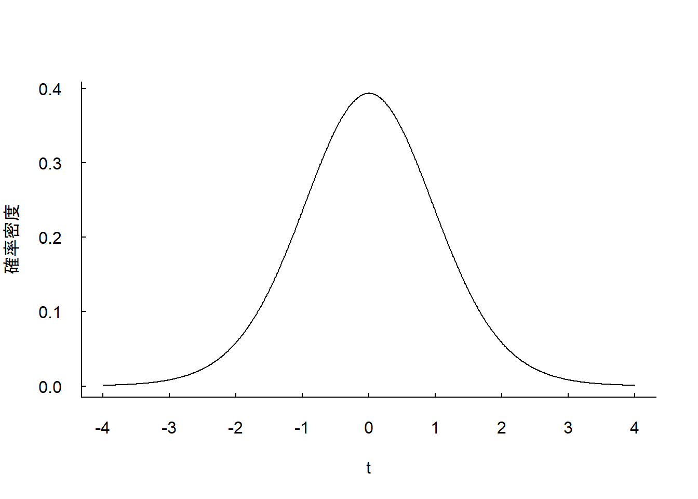

5.2.3 t分布を用いた検定
- \(t\)分布を用いた検定を行ってみましょう。
- 標本相関係数\(r\)を(5.8)式の変数\(t\)に変換します。
\[ t = \frac{r}{\sqrt{1 - r ^{2}}} \times \sqrt{N - 2}\tag{5.8}\\ \]
- 逸脱行動データにおける\(r = 0.60(N = 20)\)の数値例で計算してみましょう。
## [1] 3.181981- 自由度\(df = 18\)の\(t\)分布をプロットします。
x <- seq(-4, 4, 0.01)
plot(x, dt(x, df = 18),
type = "l",
las = 1,
bty = "l",
tcl = 0.2,
xlab = "t",
xaxp = c(-4,4,8),
ylab = "確率密度")
- 計算で求めた\(t = 3.181 \cdots\)という値はかなりまれであることがわかります。
- 教科書では付表4を使って有意かどうかの判定をしています。
- Rでは自由度\(N - 2\)の\(t\)分布において，先ほど計算した\(t\)値(3.181…)が分布の何%に位置するか計算することができます。
- 計算には
pt()関数を使います。
- 計算には
pt()関数は，t分布の下側確率(probability)を略してpt()という名前になります。
pt()関数では，pt(確率を求めたいt値, df = 自由度)という引数を指定します。- 上側確率を求めたい場合には，引数
lower.tail = FALSEを追加で与えます。 lower.tail = FALSEを引数に指定した場合と，指定せずに1から引いた値はおなじ値となります。
- 上側確率を求めたい場合には，引数
## [1] 0.002581463## [1] 0.002581463- 5%水準(上側確率0.025)よりも小さいので，5%水準の両側検定で有意になります。また，この値は1%水準(上側確率0.005)よりも小さいので，1%水準の両側検定でも有意になります。
- Rでは無相関仮説の検定を行う
cor.test()関数があります。
cor.test()関数を使って検定を行ってみましょう。
- まずは男子の逸脱行動データを読み込みます(\(r = 0.60, N = 20\))。
## [1] 20## [1] 0.5983922cor.test()関数は，cor.test(変数x,変数y)という引数を指定します(そのほかの引数に関しては，?cor.testとコンソールに入力してください)。
##
## Pearson's product-moment correlation
##
## data: dat_M$Grade_6th and dat_M$Grade_8th
## t = 3.1687, df = 18, p-value = 0.005316
## alternative hypothesis: true correlation is not equal to 0
## 95 percent confidence interval:
## 0.2120125 0.8229856
## sample estimates:
## cor
## 0.5983922- 実行結果のうち，
t =は\(t\)値を表します。今回は正確な標本相関係数の値が使われているので，\(r = 0.6\)で計算した時よりも\(t\)の値よりも少し小さくなっています。
- 同じ結果になるかは以下のコードで確認できます。
## [1] 3.168687df =は自由度を表します。今回は\(N = 20\)だったので，自由度は\(df = N - 2\)の18です。
p-valueはp値を表します。この値は先ほど
pt()関数で計算した上側確率を2倍したものになっています。pt()関数では，\(t > 3.181...\)の確率しか求めていませんでしたが，両側検定では\(t < -3.181...\)の確率も含まれるためです。
p値が5%水準(\(\alpha = .05\)，1%水準(\(\alpha = .01\))よりも小さいので1%水準で有意であることがわかります。